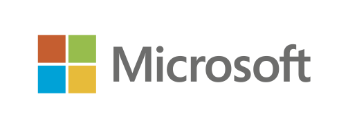
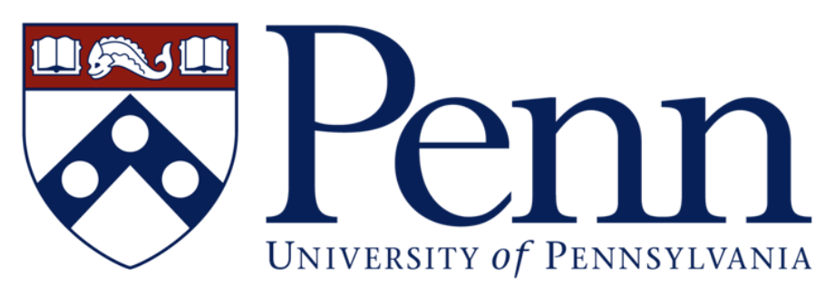

<div class='row'>
        <div class="col-md-12">

<center>
	<div><font size="+4">Workshop on Trustworthy AI</font></div>
	<div><font size="+2">January 5-6, 2023 - Microsoft Research, Bengaluru, India</font></div>
</center>

<hr style="width: 100%; color: black; height: 1px; background-color:black;" />

<center>



</center>

<hr style="width: 100%; color: black; height: 1px; background-color:black;" />

<p>Recent advances in AI have led to breakthroughs in commercially important applications such as object recognition, natural language processing, and automatic translation.  However, the transformative potential of these advances is vastly untapped in high-stakes domains which demand a high degree of safety, trust, and privacy, such as healthcare, agriculture, climate sciences, transportation/civic engineering, and robotics.  The goal of the event is to bring together leaders and researchers in these areas in academia, industry, and non-profit organizations across India to exchange ideas and foster collaboration.</p>

<hr style="width: 100%; color: black; height: 1px; background-color:black;" />


<ul>
<li>Here is the <a href="https://teams.microsoft.com/dl/launcher/launcher.html?url=%2F_%23%2Fl%2Fmeetup-join%2F19%3Ameeting_ZWQ1Y2M4NDMtNDFjNi00MmEyLWI2NzEtYzU5NTAyOTAxZDA4%40thread.v2%2F0%3Fcontext%3D%257b%2522Tid%2522%253a%252272f988bf-86f1-41af-91ab-2d7cd011db47%2522%252c%2522Oid%2522%253a%2522c43e40aa-4821-497f-9aa4-7888cd4ba7e7%2522%257d%26anon%3Dtrue&type=meetup-join&deeplinkId=97c4eb5e-afd3-48a6-b7c4-46e934df9b8b&directDl=true&msLaunch=true&enableMobilePage=true">Live-Stream URL</a> of the event.  You can either <a href="https://www.microsoft.com/en-us/microsoft-teams/download-app">Download the Microsoft Teams app</a> or
<a href="https://www.microsoft.com/en-in/microsoft-teams/join-a-meeting?rtc=1">Join on the Web</a> using Meeting ID: 249 474 864 752 and Passcode: gXf7Zi</li>
</ul>

<hr style="width: 100%; color: black; height: 1px; background-color:black;" />

<h4>Organizers</h4>

<table>
<tr>
	<td><a href="https://www.cis.upenn.edu/~alur/">Rajeev Alur</a> and <a href="https://www.cis.upenn.edu/~mhnaik/">Mayur Naik</a></td>
	<td><a href="https://asset.seas.upenn.edu/">ASSET Center</a>, University of Pennsylvania</td>
</tr>
<tr>
	<td><a href="https://www.microsoft.com/en-us/research/people/amitdesh/">Amit Deshpande</a> and <a href="http://www.amitsharma.in/">Amit Sharma</a></td>
	<td><a href="https://www.microsoft.com/en-us/research/lab/microsoft-research-india/">Microsoft Research, India</a></td>
</tr>
<tr>
	<td><a href="https://www.wadhwaniai.org/team/soma-dhavala/">Soma Dhavala</a></td>
        <td><a href="https://www.wadhwaniai.org/">Wadhwani AI Institute for Social Impact</a></td>
</tr>
</table>

</div>
